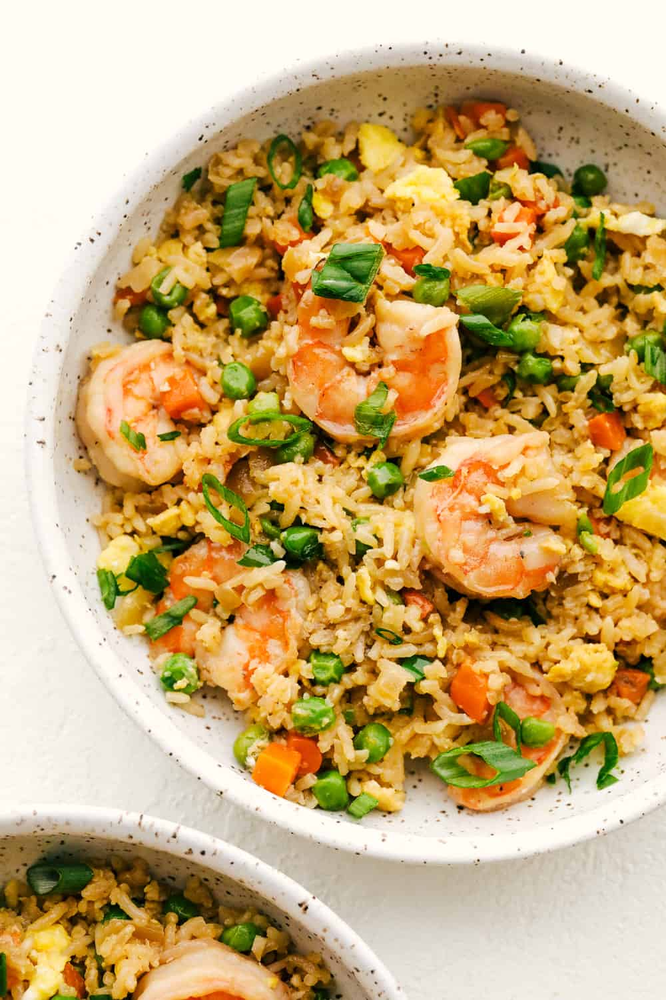

Shrimp Fried Rice

Description
A hearty bowl of shrimp fried rice
Ingredients
- 1 Egg
- 8 Shrimps
- 1 cup of day old rice
- 2 teaspoon soy sauce
- 1/2 teaspoon black pepper
- green onion for garnish
Steps
- Scrambled the egg in a pre-heated wok.
- Add the shrimps when the egg lost most of its liquid. Cooked until almost through.
- Add rice and all seasonings, heavily stir the wok to aerate all ingredients together.
- Turned off the heat and finished with green onion.